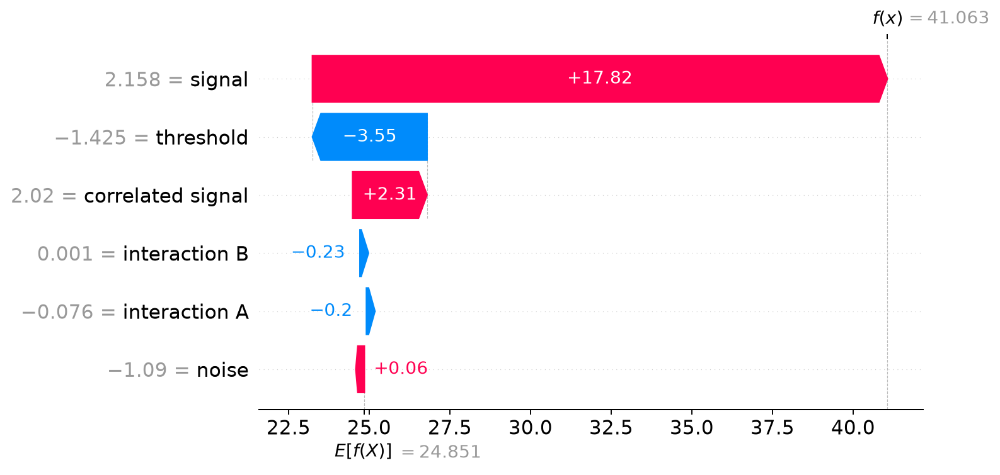
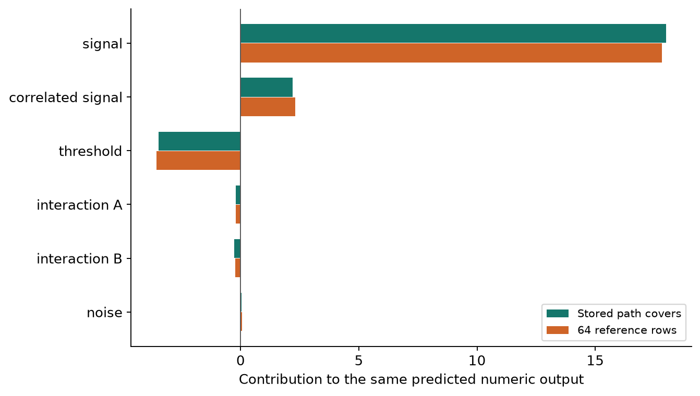

Use TreeExplainer and Verify the Result
We have calculated small examples exactly. Now we will fit a random forest and verify a real TreeExplainer result. The dataset is generated locally, so the example does not require accounts, downloaded datasets, or a long training run.
The goal is to keep every comparison visible: training rows fit the model, held-out rows measure prediction quality, a reference sample defines one explanation rule, and a small held-out batch supplies the explanations we plot.
Run the complete example
Save tree_shap_lab.py, verify_treeexplainer.py, and requirements.txt in the same directory. With Python 3.12 available, run these commands from that directory:
python3.12 -m venv .venv
source .venv/bin/activate
python -m pip install -r requirements.txt
python tree_shap_lab.py
python verify_treeexplainer.pyThe first script needs only Python’s standard library. The second uses SHAP 0.52.0, scikit-learn 1.9.1, NumPy 2.5.3, and Matplotlib 3.11.2, which are pinned in the requirements file. It writes figures and assets/library-results.json. The recorded output also contains the interpreter version and unrounded numbers.
Below are the main steps from the complete script. The download includes the independent checks and figure generation as well.
Generate inputs whose relationships are known
import numpy as np
from sklearn.model_selection import train_test_split
rng = np.random.default_rng(23)
X = rng.normal(size=(1200, 6))
X[:, 1] = 0.8 * X[:, 0] + 0.2 * rng.normal(size=1200)
y = (20 + 8 * X[:, 0] + 12 * (X[:, 2] > 0.3)
+ 6 * X[:, 3] * X[:, 4] + rng.normal(size=1200))
X_train, X_test, y_train, y_test = train_test_split(
X, y, test_size=0.25, random_state=23
)
names = ["signal", "correlated signal", "threshold",
"interaction A", "interaction B", "noise"]The first input contributes directly to the generated target. The second is correlated with it but does not appear separately in the target formula. The third triggers a threshold effect. The fourth and fifth enter as a product. The sixth does not enter the target. The final random term adds observation noise.
These choices let us distinguish a known data-generating rule from the fitted forest. The forest sees finite noisy observations and may use the correlated input as a substitute for the first input. Its SHAP values explain that fitted behavior.
Fit and evaluate before interpreting
from sklearn.ensemble import RandomForestRegressor
from sklearn.metrics import mean_absolute_error
model = RandomForestRegressor(
n_estimators=80, max_depth=5, min_samples_leaf=5,
random_state=23, n_jobs=1,
)
model.fit(X_train, y_train)
mae = mean_absolute_error(y_test, model.predict(X_test))
constant_mae = mean_absolute_error(
y_test, np.full(len(y_test), y_train.mean())
)There are 900 training rows and 300 test rows. The recorded test mean absolute error is 4.170465, compared with 9.367356 for always predicting the training-target mean. This tells us that the model learned useful predictive structure on this split; it does not imply every individual prediction is close to its observed target.
Choose reference rows separately from explained rows
reference_rng = np.random.default_rng(7)
indices = reference_rng.choice(len(X_train), 64, replace=False)
reference = X_train[indices]
explained = X_test[:32]The 64 training rows define the explicit comparison population. The 32 test rows are the cases whose predictions we want to explain. We keep both samples fixed while comparing the explanation modes.
Construct both explainers explicitly
import shap
path_explainer = shap.TreeExplainer(
model, feature_perturbation="tree_path_dependent",
model_output="raw", feature_names=names,
)
reference_explainer = shap.TreeExplainer(
model, data=reference, feature_perturbation="interventional",
model_output="raw", feature_names=names,
)
path_values = path_explainer(explained, approximate=False)
reference_values = reference_explainer(explained, approximate=False)For this regression model, both explainers target model.predict. Both return 32 × 6 contribution arrays: one row per explained case, one column per feature. The baseline is available through base_values. Calling an explainer this way returns an Explanation object that also carries inputs and names for plotting.
Reconstruct every prediction
predictions = model.predict(explained)
for result in (path_values, reference_values):
reconstructed = result.base_values + result.values.sum(axis=1)
np.testing.assert_allclose(
reconstructed, predictions, atol=2e-6, rtol=0
)The first test row has prediction 41.063064 and observed target 38.316947. Its path-cover baseline is 24.786112; its 64-row background baseline is 24.851337. The reference explanation is:
| Term | Contribution in target units |
|---|---|
| Baseline | 24.851337 |
| signal | +17.823479 |
| correlated signal | +2.308058 |
| threshold | −3.554797 |
| interaction A | −0.200568 |
| interaction B | −0.227045 |
| noise | +0.062600 |
| Reconstructed prediction | 41.063064 |
The table rounds values to six decimals; the assertion uses the unrounded arrays. A positive contribution raises the prediction relative to the reference comparison. It does not necessarily mean that the input value itself is positive.


Check more than the final sum
A sum check can catch a wrong output scale or missing baseline. It cannot detect every incorrect allocation: the path-difference values in Part 2 also added up. With only six inputs here, we can calculate the reference game independently.
For each of the 64 possible feature groups, copy the background, overwrite the revealed columns with the first test row’s values, predict on all 64 completed rows, and average. Then apply the exhaustive Shapley formula from our standard-library lab.
from tree_shap_lab import enumerate_shap
def value(known):
masked = reference.copy()
for j in known:
masked[:, j] = explained[0, j]
return float(model.predict(masked).mean())
baseline, brute_phi, _ = enumerate_shap(value, m=6)
np.testing.assert_allclose(
reference_values.values[0], np.asarray(brute_phi, dtype=float),
atol=2e-6, rtol=0,
)The largest recorded difference between the library and exhaustive per-feature values is about 2.13 × 10−7. This small floating-point difference is below the declared absolute tolerance. We have checked each contribution against an independently evaluated group table.
The full script also loads the hand-built trees through SHAP’s custom-tree interface, compares the repeated-feature results, checks the interaction matrix, and verifies that the forest’s path-dependent explanation is the average of its 80 individual tree explanations.
Compare explanations with their baselines attached


Do not combine one explainer’s baseline with the other’s contributions. If the two results disagree substantially, inspect the reference population and feature dependence before treating either as an implementation bug. Then use a small exhaustive check of the intended game to separate a semantic difference from a computational error.
Check class outputs by their actual shape
The script additionally fits a random-forest classifier for whether the target exceeds the training median. In the tested versions, its raw contribution array has shape (32, 6, 2), and the baseline array has shape (32, 2). The final axis follows classifier.classes_, here [False, True].
from sklearn.ensemble import RandomForestClassifier
classifier = RandomForestClassifier(
n_estimators=40, max_depth=4, random_state=23
)
classifier.fit(X_train, y_train > np.median(y_train))
class_values = shap.TreeExplainer(
classifier, feature_perturbation="tree_path_dependent",
model_output="raw",
)(explained)
np.testing.assert_allclose(
class_values.base_values + class_values.values.sum(axis=1),
classifier.predict_proba(explained), atol=1e-12,
)
positive_class = class_values[:, :, 1]For the first row, the True-class baseline is approximately 0.499972 and the predicted probability is 0.899864. Contributions on that class axis account for the probability difference. We do not apply a sigmoid here because this model’s raw tree output is already a probability.
For other classifiers, inspect the documented output and verify against the corresponding prediction method. The TreeExplainer API describes output and model support. With the calculation checked, the last chapter focuses on what to preserve and what to question when using the explanation.